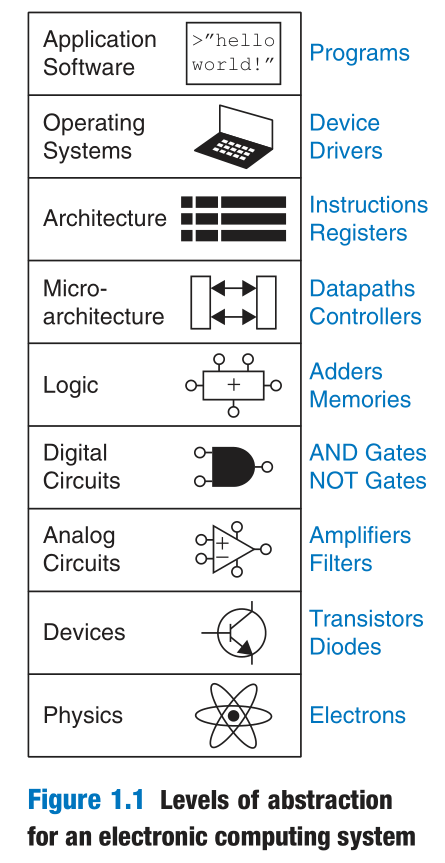

Digital Design and Computer Architecture 第一章归纳
0 前言
笔记主要是对教材的关键部分进行摘录并归类，方便以后查阅。
1 研究方法
Abstraction（抽象）
The critical technique for managing complexity is abstraction: hiding details when they are not important. A system can be viewed from many different levels of abstraction.
Discipline（标准）
Discipline is the act of intentionally restricting your design choices so that you can work more productively at a higher level of abstraction.
The Three-Y’s（三原则）
Designers use the three “-y’s” to manage complexity: hierarchy, modularity, and regularity.
- Hierarchy involves dividing a system into modules, then further sub-dividing each of these modules until the pieces are easy to understand.
- Modularity states that the modules have well-defined functions and interfaces, so that they connect together easily without unanticipated side effects.
- Regularity seeks uniformity among the modules. Common modules are reused many times, reducing the number of distinct modules that must be designed.
2 数制
Bits, Bytes, Nibbles
- The amount of information D in a discrete valued variable with N distinct states is measured in units of bits as:
$$
D=log_2N\space\space\space bits
$$
A group of eight bits is called a byte.
A group of four bits, or half a byte, is called a nibble.
Microprocessors handle data in chunks called words. The size of a word depends on the architecture of the microprocessor.
Within a group of bits, the bit in the 1’s column is called the least significant bit (lsb), and the bit at the other end is called the most significant bit (msb).
Similarly, within a word, the bytes are identified as least significant byte (LSB) through most significant byte (MSB).
%E4%BD%8D(%E5%AD%97%E8%8A%82).png)
Some Number Systems
Decimal Numbers
Base: 10.
Digits: 0, 1, 2, 3, 4, 5, 6, 7, 8, 9.
Binary Numbers
Base:2.
Digits:0, 1.
Hexadecimal Numbers
Base: 16.
Digits: 0, 1, 2, 3, 4, 5, 6, 7, 8, 9, A, B, C, D, E, F.

Signed Binary Numbers
SignMagnitude Numbers
An N-bit signmagnitude number uses the most significant bit as the sign and the remaining N−1 bits as the magnitude (absolute value). A sign bit of 0 indicates positive and a sign bit of 1 indicates negative.
Two’s Complement Numbers
Two’s complement numbers are identical to unsigned binary numbers except that the most significant bit position has a weight of $-2^{N-1}$ instead of $2^{N-1}$.
Taking the two’s complement:
The sign of a two’s complement number is reversed in a process called taking the two’s complement. The process consists of inverting all of the bits in the number, then adding 1 to the least significant bit position. This is useful to find the representation of a negative number or to determine the magnitude of a negative number.

3 逻辑门
Some Logic Gates
AND

Buffer

NOT

OR

NAND

NOR

XOR

4 数字抽象之下
Basic Concepts
Suppose the lowest voltage in the system is 0 V, also called ground or GND.
The highest voltage in the system comes from the power supply and is usually called $\bf{V_{DD}}$.
The mapping of a continuous variable onto a discrete binary variable is done by defining logic levels.
The noise margin is the amount of noise that could be added to a worst-case output such that the signal can still be interpreted as a valid input.

DC Transfer Characteristics
The DC transfer characteristics of a gate describe the output voltage as a function of the input voltage when the input is changed slowly enough that the output can keep up.
A reasonable place to choose the logic levels is where the slope of the transfer characteristic $\frac{dY}{dA}$ is −1. These two points are called the unity gain points. Choosing logic levels at the unity gain points usually maximizes the noise margins.

5 CMOS晶体管
Basic Gadgets
Semiconductors
- The electron carries a negative charge, so we call arsenic an n-type dopant.
- The hole is a lack of negative charge, so it acts like a positively charged particle. Hence, we call boron a p-type dopant.

Diodes
The junction between p-type and n-type silicon is called a diode. The p-type region is called the anode and the n-type region is called the cathode.
When the voltage on the anode rises above the voltage on the cathode, the diode is forward biased. When the anode voltage is lower than the voltage on the cathode, the diode is reverse biased.

Capacitors
A capacitor consists of two conductors separated by an insulator.

nMOS and pMOS Transistors
There are two flavors of MOSFETs: nMOS and pMOS.

CMOS Gates
These processes that provide both flavors of transistors are called Complementary MOS or CMOS.
Some CMOS Gates
NOT

NAND

Transmission Gate

The general form used to construct any inverting logic gate:

- In a properly functioning logic gate, one of the networks should be ON and the other OFF at any given time, so that the output is pulled HIGH or LOW but not shorted or floating. We can guarantee this by using the rule of conduction complements. When nMOS transistors are in series, the pMOS transistors must be in parallel. When nMOS transistors are in parallel, the pMOS transistors must be in series.
Pseudo-nMOS Logic
Pseudo-nMOS logic replaces the slow stack of pMOS transistors with a single weak pMOS transistor that is always ON.


Power Consumption
$$
P_{dynamic}=\frac{1}{2}CV_{DD}^2f
$$
$$
P_{static}=I_{DD}V_{DD}
$$
Digital Design and Computer Architecture 第一章归纳
http://example.com/2022/07/18/Digital-Design-and-Computer-Architecture-第一章归纳/